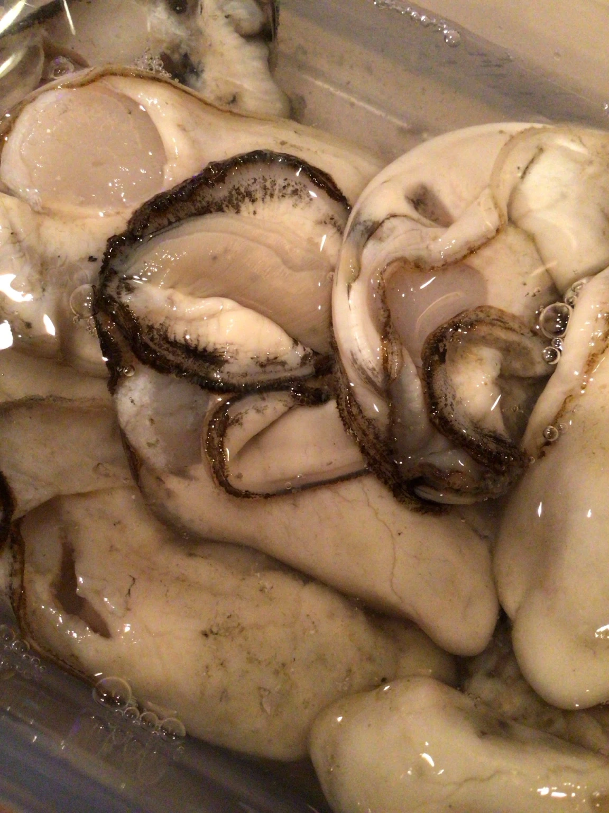
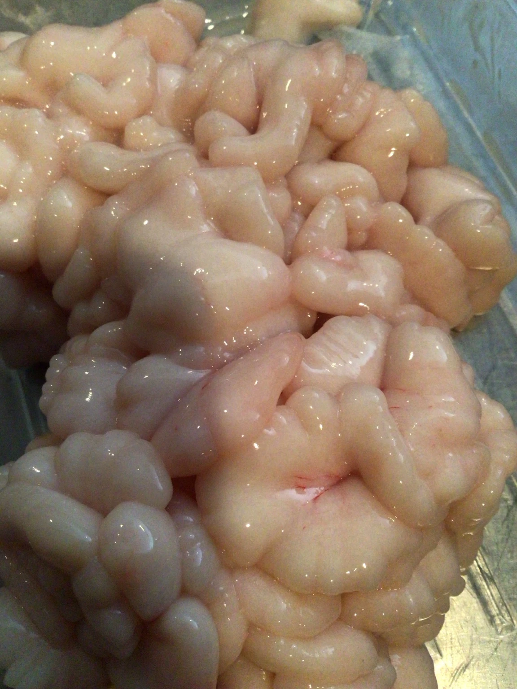
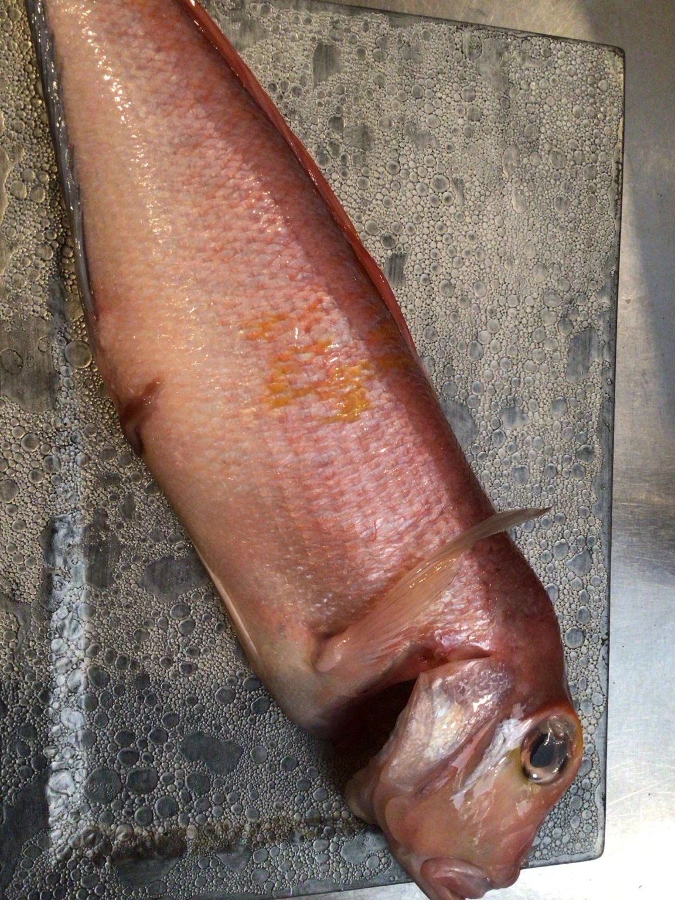
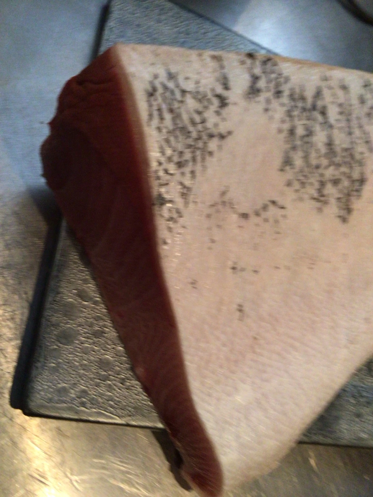
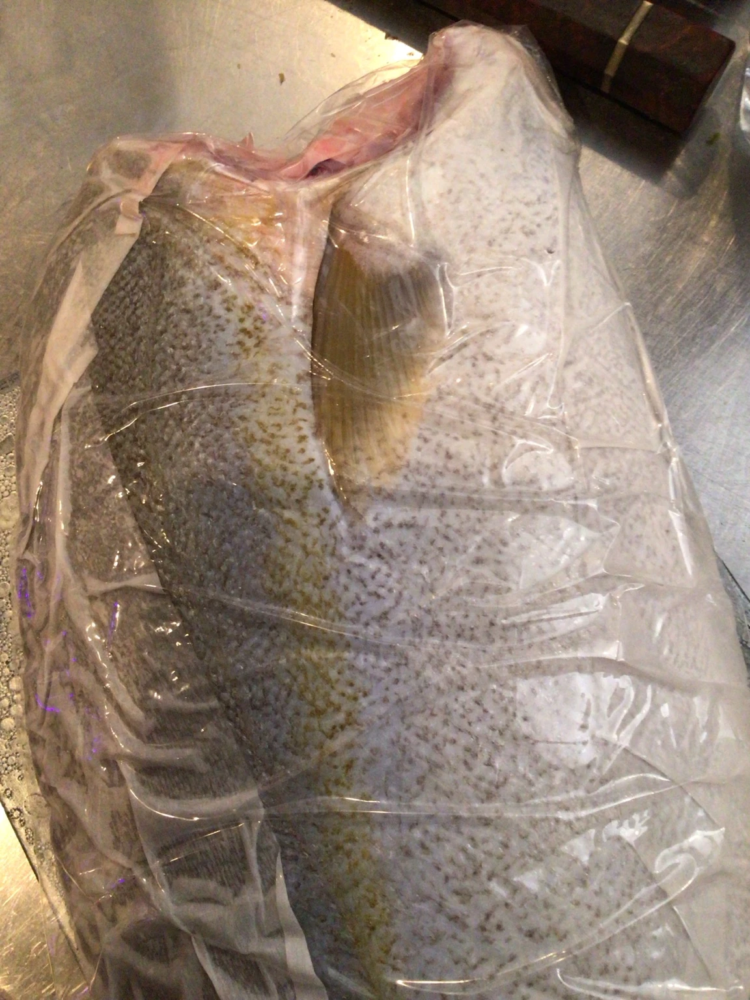
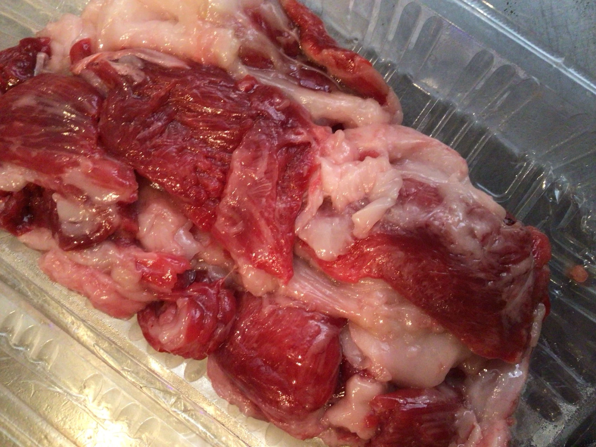

11月5日、饗応 元に6種類の食材が届きました。宮城県産の牡蠣、鱈の白子（雲子）、赤甘鯛、鰤、カンパチ、本鮪の目肉です。
店主が撮影した、入荷した食材そのものの写真をご紹介します。
宮城県産の牡蠣

鱈の白子（雲子）

赤甘鯛

鰤

カンパチ

本鮪の目肉

写真・食材名・入荷日：店主提供、2026年11月5日確認。本記事は同日の入荷記録です。料理内容・価格・現在の提供状況は、お電話または店頭でお確かめください。